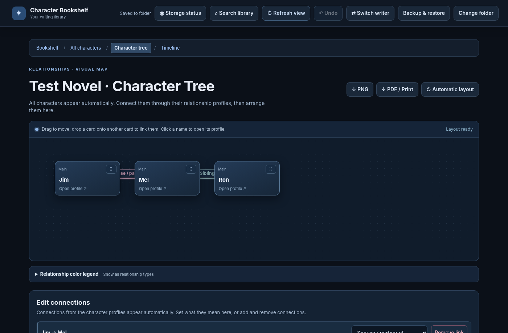
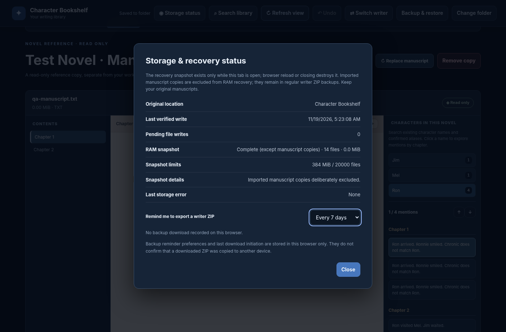

Welcome to Character Bookshelf
A portable library for your novels, character profiles, relationships, and timelines. Your information stays in the storage folder you select.
- Open the app using current Chrome or Edge over HTTPS (or localhost).
- Choose Select location and select a writable folder or USB drive. Approve the browser permission request.
- Character Bookshelf opens or creates its own Character Bookshelf subfolder.
- On the writer selection screen, choose your writer or create a new profile.

Nothing opens the tutorial automatically. Close it whenever you like, and use the topic links on the left to jump directly to a feature.
Writer Profiles
Writer profiles separate different people’s libraries. They're organizational profiles, not password-protected accounts.
- After choosing storage, select Create writer profile.
- Enter the writer’s name and open their bookshelf.
- Use Switch writer when moving between libraries.

Books & Characters
- Choose New novel on the bookshelf to create a book.
- Select its cover to open the character gallery.
- Choose New character and enter the name.
- Fill in the six profile sections and allow the save status to confirm your changes.
- Optional: add Aliases & nicknames under Basic Information, separated with commas, semicolons, or new lines. Only variations you enter will be searched in the manuscript.

Images and book covers are optional. A character you copy between novels becomes a separate profile, so editing one does not modify its counterpart.
Character Tree
The Character Tree creates a visual map from the relationships stored in your character profiles.
- Open a novel and choose Character tree.
- Drag cards to arrange them, or drag one card onto another to create a relationship.
- Choose relationship types and notes in the connection editor.
- Use the legend for relationship colors, or export the tree to PNG or PDF.

Timelines
Timelines organize structured events. Freeform notes are never automatically converted into timeline entries.
- Open a novel’s Timeline.
- Choose Add Event and enter a title. The year and date are optional.
- Choose characters associated with the event and save it.
- Use All Characters or By Character to change the view.

An event without a sortable year remains undated; the application does not invent one. You can edit it later from its original book.
Novel Series
Series are optional. Linked novels remain on your regular bookshelf, next to their series companions. Look for the small ◇ series label on a book cover; select that label to open its Series page. No separate series-only shelf is created, and no novel files are moved or merged.
- On the bookshelf, choose Series, then New series.
- Link existing novels using Link book; move their order with the arrow controls. Return to your regular bookshelf and select the subtle series label on any linked cover to reopen that Series page.
- Choose a source book, character, and destination book, then select Copy character.
- Open the destination book to edit the copied profile independently.
- See dated events from all member novels under Combined series timeline. Events with no sortable year appear under Undated / relative events, labeled by book.

Manuscript Reader
Import a separate read-only copy of a DOCX, TXT, or PDF manuscript into a novel. Your original document stays wherever you keep it.
- Open the book’s Manuscript page.
- Select Import manuscript, then choose your file (up to 64 MiB).
- For TXT and DOCX, select a character on the right to see mention counts, grouped previews, and Next/Previous controls. Choose a preview to jump and highlight the mention.
- Use the chapter navigation and text-size controls for easier reading.

Search & Imports
Universal Search searches names, character fields, relationship information, novel titles and timeline events for the selected writer. Whole-word matching avoids false hits such as searching for “Ron” inside “chronic.”
- Choose Search library from the navigation.
- Enter a word or phrase and select Search.
- Click a result to open the matching character or event.
- Use Refresh View after editing files from another program to rebuild the temporary search index.
You can also import compatible character JSON files. Proposed edits can be compared with saved profiles before changes are committed. Nothing is automatically merged.
Backups & Recovery
Protect your library by keeping verified backups separate from your primary USB drive.
- Select Backup & restore.
- Export the current writer's ZIP. It includes characters, trees, timelines, portraits, book covers, series metadata, and imported manuscript copies.
- Store the backup on a different device and periodically verify its contents.
- Check Storage status to see write and recovery information.

If the USB drive disconnects or a save fails, leave the tab open. Follow the on-screen recovery instructions and save recoverable files to a different location if offered. Some recovery copies may be incomplete. Wait for Saved before safely ejecting storage.